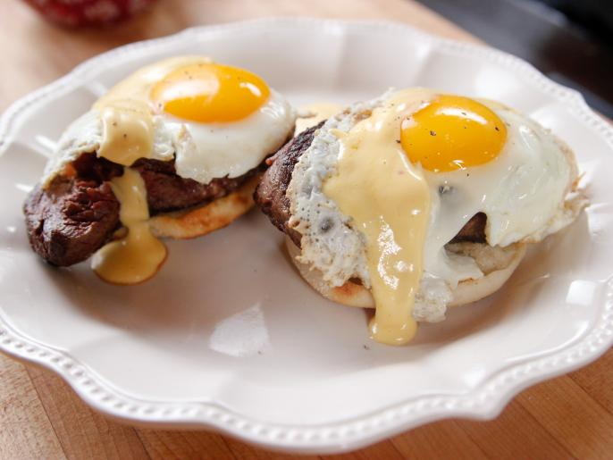

Food Network's Steak and Eggs Bennedict
Return to home page

Steak and Eggs Benedict is a delightful twist on the classic Eggs Benedict dish. Instead of the traditional Canadian bacon or ham, this variation features tender and juicy slices of steak as the star ingredient. The dish typically starts with a toasted English muffin base, topped with succulent grilled steak, perfectly poached eggs, and velvety hollandaise sauce. The combination of the savory steak, creamy eggs, and luscious sauce creates a mouthwatering and hearty breakfast or brunch option. Steak and Eggs Benedict offers a satisfying and indulgent experience for those seeking a more robust and meaty twist on the classic brunch favorite.
Ingredients
- 7 large eggs
- 1/2 lemon juice
- 1 cup salted butter
- 1 teaspoon adobo sauce
- kosher salt
- Two 12 ounce tenderloin steak
- english muffins
- butter for skillet
- 1 clove, finely grated
- 4 tablespoons salted butter for muffins
- 2 tablespoons finely grated parmesan
Steps
-
Return to top